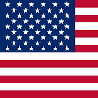

SOCIAL STUDIES ASSIGNMENT BLOG ABOUT POLAND
Information -
In 1989, Poland's citizens rebelled peacefully against their communist leader. This protest led to other communist governments and or leaders falling / losing strength as well. Some people go as far to say that Poland’s communist fall began the fall of communism in Eastern Europe.
Main Idea -
Poland’s citizens rebelled peacefully from communism. This helped other countries to remove their communist governments / leaders. This helped some countries become democracies, as they no longer had communist governments / leaders.
Links -
Primary Sources - Quotes From Articles (ie. https://2001-2009.state.gov/r/pa/ho/time/rd/17672.htm)
Secondary Sources - Britannica and New York Times
Questions -
#1 - What event or political movement helped defeat communism?
Answer - The trade union Solidarity won an overwhelming victory in one of Poland’s partially free elections. This lead to Poland’s peaceful fall of communism during the summer of 1989.
#2 - Who were key leaders of the event or movement?
Answer - An anti-communism association known as Solidarity made themselves known during the 1980s. They also made a series of strikes that gained international attention.
#3 (#4)? (#5)? - Was the process of democratization easy or difficult for the people in the country? What events made it easy? What events made it difficult?
Answer - The process of democratization was easy because it took a couple of weeks instead of a few months. The anti-communism association, Solidarity, finally over took the communist leader in 1989. This event that made it easy to transit to a democracy.
#6 - Did the country survive the process, or did it dissolve into new countries?
Answer - Poland survived the fall of communism. It still does very well and has a strong government, in the form of a representative democracy.
#7 - What is the state of the original country or new countries today?
Answer - Poland not only survived the fall of it’s communist rule. It’s a stronger country than it ever was before!
YOU MAY CONTACT ME AT NO.CHILL.0G.BRO@GMAIL.COM IF YOU WANT YOUR BLOG TO BE POSTED ON THIS WEBSITE.
CREDIT FOR FIRST BLOG, PIERSON WEKKIN.
CREDIT FOR WEBSITE, PAUL MURPHY.
WE HAVE MORE ADDITIONS, SUCH AS THE SEARCH BAR, COMING TO THE WEBSITE SOON.